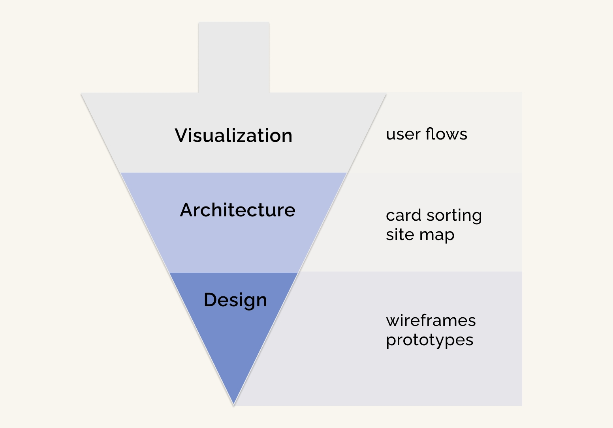

A UX case study of a bilingual, mobile-first web app for health literacy
The Rural Women’s Health Organization has provided health literacy education to Hispanic immigrants and families in rural north-central Florida for over twenty years. However, their educational materials have always been print-based, limiting their outreach in a rural area. This project is a prototype for a bilingual, mobile-first website adapting one such resource, guided by accessibility considerations.
Role
As UX designer, I oversaw the entire project lifecycle- discovery (user research), concepting (user flows, wireframes, visual design) and prototyping/testing (usability testing design and analysis). This was a student project, completed over about six months, through CareerFoundry’s UX Immersion certificate program.
Background
The north central Florida area is an increasing destination for Hispanic immigrants, but online health literacy efforts face distinct challenges, such as low technological literacy, limited internet access due to rurality and mobile-dependent use patterns.
Problem
How can we create an engaging and informative website that is accessible to users with mobile-dependent internet access and low literacy?
Solution
My prototype includes:
- mobile-first design pattern;
- fully bilingual site design and UI elements;
- integrated audio narration built into UI, for accessibility to low-literacy users
Problem solving a difficult user research scenario
The target users were identified as:
Hispanic, first-generation immigrants with mobile-dependent internet access, limited reading literacy and limited technological literacy, spread across a wide geographic area.
In the best of times, this is a tough community to contact. Long work hours limit their availability, their network coverage is often spotty and many have uncertain legal status, leaving them hesitant to be interviewed. I set up an online survey, but received only two responses. I designed user interviews, but I was only able to interview one community member myself.
With limited direct access to potential users, I had to find secondary sources: other individuals with insider knowledge of this community. I interviewed health care professionals engaged in local free clinics, community leaders and organizational staff from the Rural Women’s Health Project.
For a broader (if less precise) picture, I also consulted existing market and demographic research from superset populations overlapping with my narrow user community.
Interview quotes and research data were color-coded and affinity mapped. I went on to develop user journeys and personas based on two distinct but likely user scenarios, given this data.

Concepting and Visual Design for Accessibility
The discovery process had made it clear that accessibility would become the primary consideration and guiding principle for this project.
Grounded in the needs and realities of my two personas, I worked from the top down.

Buttons and styling were used to visually differentiate language settings. A quick round of preference testing revealed that users preferred placement at the top.

Prototyping and Usability Testing for Audio and Language Functionality
After months alone in the ‘woodshed’, I successfully developed a prototype in Adobe XD that integrated UI elements for audio narration and language settings.


Adding audio was fun and challenging. Originally, the RWHP team had planned to record these stories with actors. Since that hadn't happened, I searched online for text-to-speech APIs. I found one that generated surprisingly authentic-sounding voices in both languages, but the dialect of the Spanish narration was European, or peninsular, Spanish. This is both a little jarring, since the faces are clearly Latin-American, and potentially harder to understand (as noted by one participant in testing). This should be addressed prior to further development.
It was time for usability testing, and I was excited. Real people, interacting with my design, giving me feedback!
Considerations for Usability Testing
Usability testing required unique considerations considering COVID-related constraints and limited accessibility to authentic users.
- Remote moderated testing (due to COVID)
-
Bilingual test design
Being bilingual was essential to this project, as I was able to design and administer tests using scenario-based tasks in English or Spanish. Download the usability testing script here.
-
Transcription of testing sessions
Since I was flying solo on this project, I opted to have all sessions transcribed. Temi is a great automated transcription service. This removed the distraction of note-taking during sessions.
- Scheduling sessions using Calendly
A one-stop shop for scheduling, automated communication with participants and collecting background data, Calendly greatly simplified the logistics around testing sessions.
Analysis and Final Protototype
Usability testing and analysis identified several significant errors, which were subsequently addressed. Preference testing and solicited feedback from student peers also led to additional changes. The final design was greatly improved.
Conclusion
What did I learn?
As a first project - and one that spanned the design lifecycle - every stage of work was a learning moment. I became fascinated with the researcher’s journey when I realized the potential impact on a product’s success. A visually dazzling web app designed for desktop devices - cool though it might be - would not solve the problem facing real users as I came to understand them, i.e., mobile-dependent, low tech literacy.
What are the next steps?
Ideally, this prototype would be handed off to developers, and the final site would be shared on social media by the Rural Women’s Health Project. The site could be used as a template for adapting other printed resources for online access.
Future features
The best upgrade for this project would be additional features and functionality that serve to build community, for example:
- buttons for sharing to social media;
- an ability to add comments;
- a calendar of community events, and
- a searchable database of local organizations and resources
Final thoughts
This project bridged my current work and my career aspirations, so I felt heavily invested. Feeling personally invested, however, is neither a precondition nor a guarantee for success. In fact, it can even make the work more challenging (my experience), especially when on your own.
Thanks for reading! I’d love to hear from you. Please feel free to reach out by email and connect on social media.